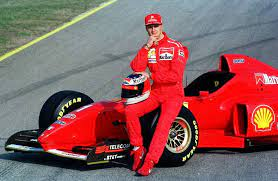

Ferrari na F1

1939 Maranello, Emilia-Romangna
A Scuderia Ferrari foi fundada por Enzo Ferrari em 1929 e tornou-se a equipe de corrida da Alfa Romeo. Em 1938, a Alfa Romeo tomou a decisão de entrar nas corridas com seu próprio nome, que institui a organização Alfa Corse, que absorveu o que tinha sido a Ferrari. Enzo Ferrari não concordou com esta mudança na política e foi, finalmente, demitido pela Alfa em 1939. Os termos de sua saída proibiu-o de participar do automobilismo em seu próprio nome, por um período de quatro anos. Em 1939, a Ferrari começou a trabalhar um carro de corrida de sua autoria, o Tipo 815 (oito cilindros, 1,5 L de deslocamento). O 815S, projetado por Alberto Massimino, foram, assim, os primeiros carros da Ferrari. A Segunda Guerra Mundial pôs um fim temporário às corridas. A Ferrari e concentrou-se em uma alternativa de uso para sua fábrica durante os anos de guerra, fazendo o trabalho de máquinas-ferramenta. Após a guerra, a Ferrari recrutou vários de seus ex-funcionários da Alfa e estabeleceu uma nova Ferrari, querendo projetar e construir seus próprios carros.
Primeiros anos e começo da F1: Em 1947, a Auto Avio Construzioni troca de nome, retornando a se chamar Scuderia Ferrari. Com a criação da Fórmula 1, em 1950, a marca não ficaria de fora, participando pela primeira vez de uma corrida no GP de Mônaco, a segunda etapa do campeonato, e não faria feio ao obter o segundo lugar com o piloto Alberto Ascari. A primeira temporada não foi brilhante, com cinco corridas e nenhuma vitória, porém não passou batido ao conseguir pelo menos os seus três primeiros pódios — em 2020, a equipe possui a expressiva marca de 770 pódios. Em 1951, veio a primeira vitória e a primeira pole, com José Froilán González, em Silverstone, no GP Britânico. No ano de 1952, veio o primeiro título de piloto, com Alberto Ascari, ao vencer seis das oito corridas da temporada. Em 1953, Ascari conquistaria o bicampeonato, com cinco vitórias em nove corridas.
Recordes: A Ferrari é o mais antigo time restante no campeonato, sendo também o mais bem sucedido: a equipe tem quase todos os recordes da Fórmula 1. Os recordes da equipe incluem quinze títulos do Campeonato Mundial de pilotos (1952, 1953, 1956, 1958, 1961, 1964, 1975, 1977, 1979, 2000, 2001, 2002, 2003, 2004, 2007), dezesseis títulos do Campeonato Mundial de Construtores (1961, 1964, 1975, 1976, 1977, 1979, 1982, 1983, 1999, 2000, 2001, 2002, 2003, 2004, 2007 e 2008), 243 vitórias em Grande Prêmio, 9.564 pontos, 803 pódios, 246 pole positions, 259 voltas mais rápidas, 15.667 voltas lideradas, além de ser a primeira e única equipe a ter mais de 1000 Grandes Prêmios.[6]
Década de 2000: De 2000 a 2004, Michael Schumacher dominou a Fórmula 1. Sendo que apenas em 2003 ele teve dificuldades ao enfrentar três novos talentos da nova geração: Juan Pablo Montoya, Kimi Räikkönen e Fernando Alonso. No Grande Prêmio da Áustria de 2002, a equipe foi extremamente vaiada por um jogo de equipe que culminou na vitória de Michael Schumacher.[9] Em 2005, no entanto, o rendimento da Ferrari caiu bastante. A equipe começou a temporada com uma versão modificada do carro do ano anterior (F2004M) enquanto desenvolvia o novo modelo. Essa talvez tenha sido uma das causas para o fraco desempenho nessa temporada. Outro fator, teria sido a fraca performance dos pneus Bridgestone. Próximo ao fim do ano, Rubens Barrichello anuncia estar deixando a equipe, para juntar-se a Honda. Em 2006, Felipe Massa assume o lugar de Barrichello como companheiro de Schumacher, no que seria seu último ano na categoria. Em 2007, Räikkönen estreia na equipe, consagrando-se campeão na última corrida da temporada. A temporada de 2008 foi marcada por diversos erros da equipe e dos pilotos, resultando com Felipe Massa terminando em segundo lugar no Mundial de Fórmula 1 de 2008, ficando apenas um ponto atrás do campeão Lewis Hamilton. O título foi decidido na última corrida da temporada, o Grande Prêmio do Brasil. Na penúltima curva da última volta Hamilton ultrapassou Timo Glock, conseguindo a quinta colocação e o título, que até esse momento seria de Massa, vencedor da prova. A Ferrari conquistou o título do Campeonato de Construtores, sendo o último da equipe. Com diversas modificações no regulamento da Fórmula 1 em 2009, o Ferrari F60 não foi bem sucedido e a equipe não pontuou nos primeiras três corridas do ano. O pior resultado desde 1981.
O equipamento de acampamento básico inclui uma barraca, saco de dormir, isolante térmico, fogareiro, utensílios de cozinha, comida, roupas adequadas e equipamento de segurança. A escolha do equipamento depende do tipo de acampamento e das condições climáticas.
A segurança é fundamental ao acampar. Isso inclui conhecer e respeitar as regras do local de acampamento, estar preparado para mudanças climáticas, levar equipamento de primeiros socorros e seguir boas práticas de proteção ambiental.
Um planejamento adequado é essencial. Isso envolve a seleção de um local de acampamento apropriado, a verificação das condições climáticas, a obtenção de permissões (se necessário) e a comunicação de seu itinerário a alguém de confiança.
#FORZA TIFOSI
Vídeo sobre o GP do BRASIL:
Lembre-se de que os benefícios do acampamento podem variar de pessoa para pessoa, mas, no geral, acampar oferece uma pausa bem-vinda da vida cotidiana, promove a saúde física e mental e proporciona uma apreciação mais profunda da natureza e do mundo ao nosso redor.